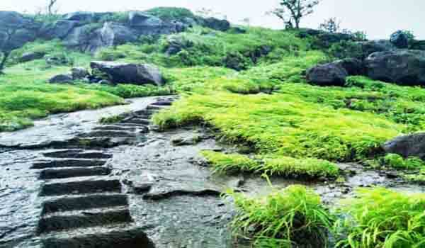
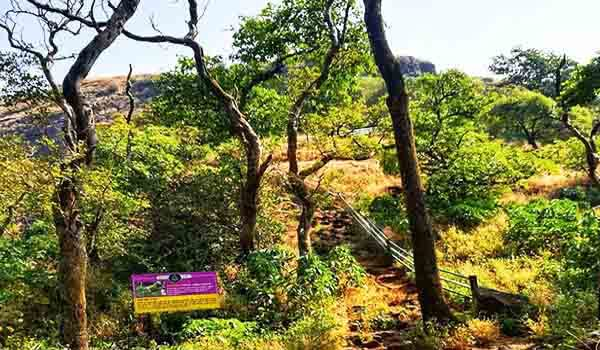

Asherigad fort is located in Palghar district, of Maharashtra. It is located 102 km from Mumbai and 88 km from Thane. The fort is located on the hills near Mendhavan Khind on Mumbai-Ahmedabad highway. The base village for this trek is Khodkona, which is a very small tribal village. The fort lies in ruins. There is a temple at the top. There are huge water tanks which has potable water till December.
Asherigad is 1628 feet above sea level fort offers a great view of the surrounding mountains of Palghar and there is so much to explore in the fort that makes it one of the best travel destinations. Apart from that, the trail that leads from the base village is a very scenic trail combined with rocky patching and lush green forest cover with different species of birds and insects showing the diversity of the region and uniqueness of Asherigad. There’s a cave on the fort that can be used for accommodation. The local villagers provide night stay and food arrangements at a reasonable cost.
The trek route for Asherigad starts from the hillock north of the base village, Khodkona. It is well marked till the top and there is no chance that anyone can get lost there. The route is very safe and wide. The route goes through a dense forest and hence provides a lot of shade to the trekkers. There is a temple of Vagdev a bit ahead of this pass on a higher level. Here one can find a small sculpture of Ganesh on the rock face.
How to Reach: Palghar Station on the Western Railway line is the nearest railhead. Take any Bus going towards Manor / Wada and get down at Mastan Naka. Sharing Rickshaw or a van will reach you to the Khodkana village is 1km inside from the highway.